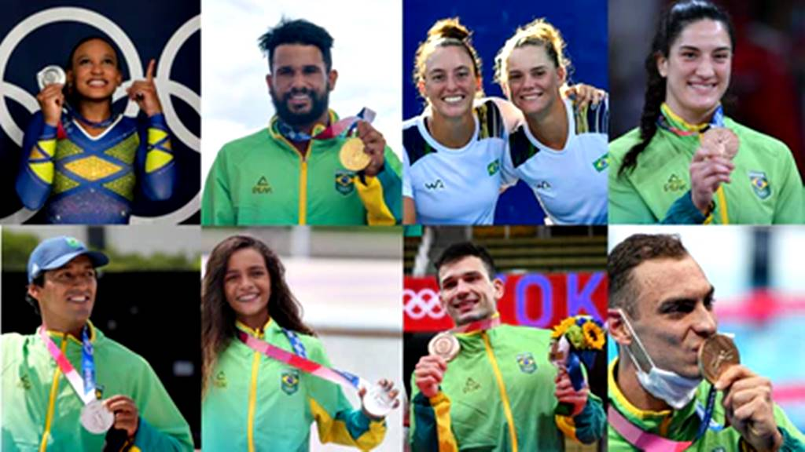

Alguns participantes de determinadas modalidades das Olimpíadas de 2021
Brasil terá 302 atletas representando o país, 12ª maior delegação da competição que acontece em Tóquio.
Atletismo
- Aldemir Gomes Júnior (200m)
- Alexsandro Melo (salto triplo e salto em distância)
- Alison dos Santos (400m com barreiras)
- Almir Cunha dos Santos (salto triplo)
- Altobeli da Silva (3.000 milhões de tentativas)
- Ana Carolina Azevedo (200m e 4x100m)
- Ana Cláudia Lemos (4x100m)
- Anderson Henriques (4x400m misto)
- Andressa Morais (lançamento do disco
Badminton
- Jucielen Romeu (57 kg)
- Beatriz Ferreira (60 kg)
- Wanderson Oliveira (63 kg)
- Hebert Conceição (75 kg)
- Keno Machado (81 kg)
- Abner Teixeira (91 kg)
Canoagem velocidade
- Jacky Godmann (C1 1000m)
- Isaquias Queiroz (C1 1000m e C2 1000m)
- Vagner Souta (K1 1000m)
Ginástica artística
- Arthur Zanetti
- Diogo Soares
- Flávia Saraiva
- Francisco Barretto Junior
- Rebeca Andrade
Surfe
- Gabriel medina
- Ítalo ferreira
- Silvana lima
- Tatiana Weston-Webb
Luta livre
- Aline Silva (estilo livre, 76 kg)
- Lais Nunes (estilo livre, 62 kg)
- Eduard Soghomonyan (estilo greco-romano, 130 kg)
Vôlei de praia
- Ágatha / Duda
- Ana Patrícia / Rebecca
- Alison / Álvaro Filho
- Bruno Schmidt / Evandro
Tiro com arco
- Marcus Vinícius D'Almeida
- Ane Marcelle dos Santos
Tênis
- João Menezes (simples)
- Thiago Monteiro (simples e duplas)
- Bruno Soares (duplas)
- Marcelo Melo (duplas)
- Marcelo Demoliner (duplas)
- Luisa Stefani (duplas)
- Laura Pigossi (duplas)
Ciclismo mountain bike
- Henrique avancini
- Jaqueline Mourão
- Luiz henrique cocuzzi
Esgrima
- Guilherme Toldo (florete)
- Nathalie Moellhausen (espada)
Hipismo Saltos
- Pedro Veniss
- Marlon Zanotelli
- Rodrigo Pessoa
- Yuri Mansur
Levantamento de Peso
- Jaqueline Ferreira (87 kg)
- Natasha Rosa (49 kg)
Maratona aquática
- Aline Rodrigues (4 × 200m livre)
- Ana Vieira (4x100m livre)
- Beatriz Dizotti (1500m livre)
- Breno Correia (200m livre, 4x100m livre e 4x200m livre)
- Bruno Fratus (50m livre)
- Caio Pumputis (100m do peito e 200m medley)
- Etiene Medeiros (50m livre e 4x100m livre)
- Felipe Lima (100m peito e 4x100m medley)
- Fernando Scheffer (200m livre e 4x200m livre)
- Gabriel Santos (100m livre, 4x100m livre e 4x100m medley

Voltar para a página original
Ir até a página de curiosidades
Fonte 1